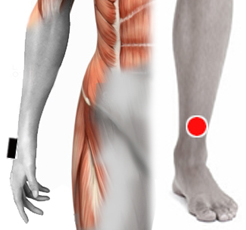
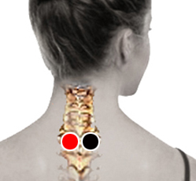

Equilibrio energético
Pares
muñeca (I/D) -tibia inf. (contralateral)
pectoral (D/I) - tendón cuadriceps (homolat.)
tendón triceps - aquiles
supraciliar - interciliar*

Generalidades:
Incrementa la energía. El equilibrio o balance energético del cuerpo permite una pronta recuperación y minimiza los efectos negativos de la crisis curativa. Se pueden aplicar estos pares cuando la persona presenta mareos, fatiga o algún tipo de molestia después de la sesión de biomagnetismo.
* El par supraciliar - interciliar regula la energía emocional.
Par
plexo cervical - plexo cervical

Desbloqueo energético:
El par plexo cervical - plexo cervical, ubicado a los lados de la segunda dorsal es útil para desbloquear energéticamente al paciente y al biomagnetista, con esto se mejora la respuesta muscular inteligente, también se recomienda que ambos, paciente y biomagnetista, estén bien hidratados.